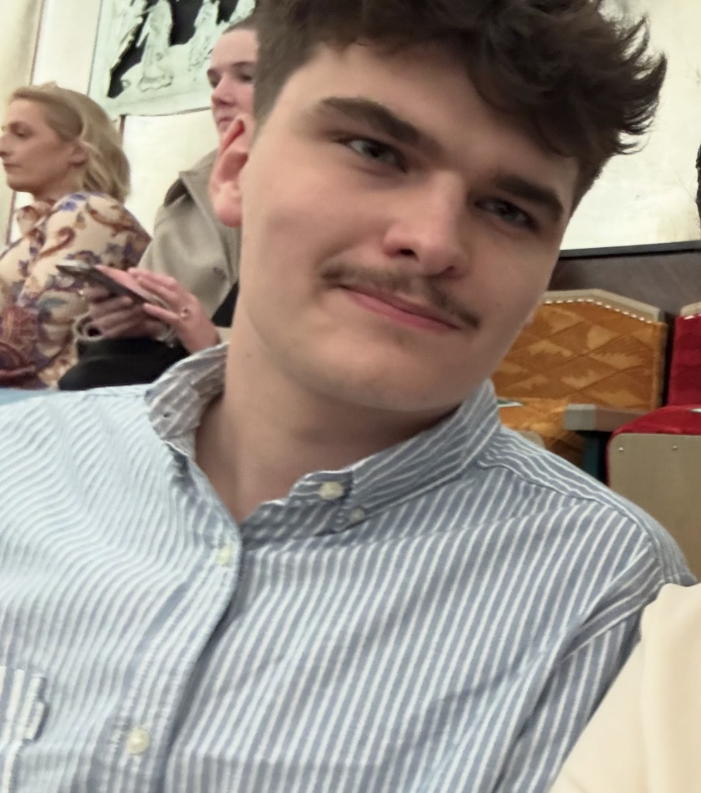

About Me
Hi, I'm Jack. I am currently studying Biological Sciences at the University of Surrey and have been tutoring students for over three years.
I achieved AAB at A-Level in Biology, Chemistry and Physics, giving me a strong foundation across all three sciences.
Alongside my studies, I work in a bicycle workshop where patience, communication and problem-solving are essential every day.
My tutoring style is based around workshops and active participation rather than long lectures. I believe students learn best when they are involved, asking questions and solving problems themselves.
Every lesson is tailored to the individual student's needs, whether they are aiming to pass an exam, improve confidence, or achieve top grades.

